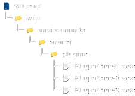
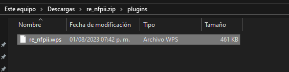
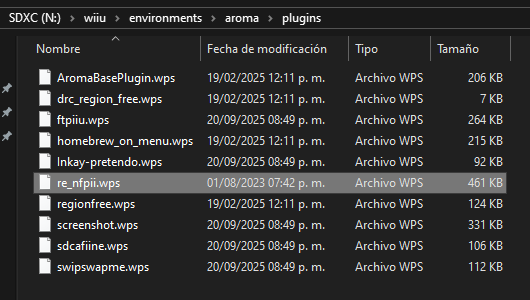
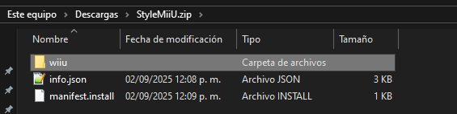
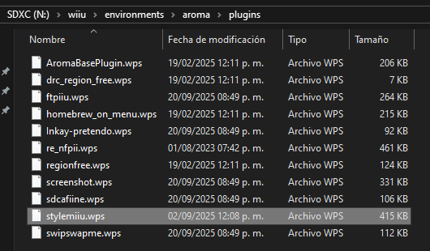

Añadir aplicaciones a Aroma
Añadir plugins WPS a Aroma
Los plugins WPS (Wii U Plugin System) son pequeñas aplicaciones y funciones complementarias para el entorno de Aroma. Se colocan en la carpeta sd:/wiiu/environments/aroma/plugins, examina la ruta de carpetas en las imágenes de referencia.
Estructura

- La estructura correcta es:
sd:/wiiu/environments/aroma/plugins/PluginName.wps. - Es incorrecto:
sd:/wiiu/environments/aroma/modules/PluginName.wps.
Instrucciones
- En este momento debes tener la Wii U apagada.
- Saca la tarjeta SD de la Wii U y ponla en tu PC para colocar los archivos.
- Descarga los siguientes plugins:
Si la PC te pregunta si deseas combinar carpetas selecciona sí.
Si la PC te pregunta si deseas reemplazar archivos selecciona sí.
- Descomprime el archivo
re_nfpii.zipy entra en la carpetaplugins. - Copia el archivo
re_nfpii.wpsy pégalo en la carpetasd:/wiiu/environments/aroma/plugins. - Así debe quedar el plugin re_nfpii en la tarjeta SD:
- Es correcto:
sd:/wiiu/environments/aroma/plugins/re_nfpii.wps. - Es incorrecto:
sd:/wiiu/environments/aroma/modules/re_nfpii.wps.


Para poder usar el plugin de re_nfpii en la Wii U es obligatorio también colocar el módulo de re_nfpii.
Las figuras oficiales actualmente no se pueden usar mientras re_nfpii está cargado. Coloca los
.bin de los amiibo en la carpeta sd:/wiiu/re_nfpii, por ejemplo: sd:/wiiu/re_nfpii/Peach.bin.En general siempre se combina la carpeta
wiiu del archivo .zip que acabas de descargar con la carpeta wiiu que ya tienes en la raíz de la tarjeta SD.Ignora los archivos
info.json y manifest.install.- Descomprime el archivo
StyleMiiU.zip. - Copia la carpeta
wiiuy pégala en la raíz de la tarjeta SD. - Así debe quedar el plugin StyleMiiU en la tarjeta SD:
- Es correcto:
sd:/wiiu/environments/aroma/plugins/stylemiiu.wps. - Es incorrecto:
sd:/wiiu/wiiu/environments/aroma/plugins/stylemiiu.wps. - Extrae la tarjeta SD de forma segura y conecta a la Wii U con la consola apagada.


En este enlace puedes encontrar una lista de plugins útiles.